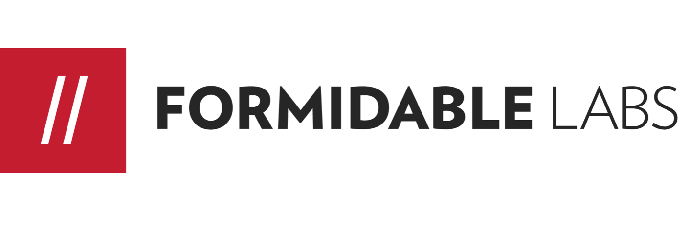
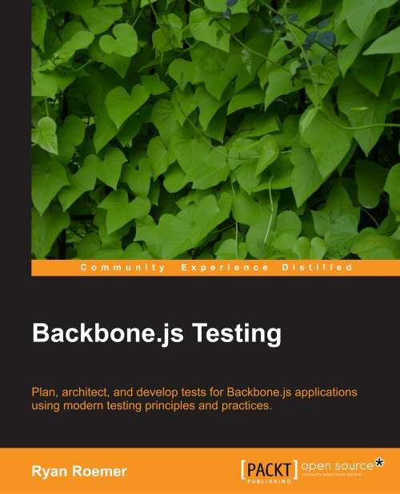

<!DOCTYPE html>
<html lang="en"></html>
<head>
  <meta charset="utf-8">
  <title>SeattleJS - Backbone.js Testing</title>
  <meta name="description" content="Backbone.js Testing">
  <meta name="author" content="Ryan Roemer">
  <meta name="apple-mobile-web-app-capable" content="yes">
  <meta name="apple-mobile-web-app-status-bar-style" content="black-translucent">
  <meta name="viewport" content="width=device-width, initial-scale=1.0, maximum-scale=1.0, user-scalable=no">
  <link rel="stylesheet" href="css/reveal.min.css">
  <link id="theme" rel="stylesheet" href="css/theme/formidable.css">
  <link rel="stylesheet" href="lib/css/zenburn.css">
  <link rel="stylesheet" href="css/site.css">
  <script>document.write( '<link rel="stylesheet" href="css/print/' + ( window.location.search.match( /print-pdf/gi ) ? 'pdf' : 'paper' ) + '.css" type="text/css" media="print">' );</script><!--[if lt IE 9]>
  <script src="lib/js/html5shiv.js"></script><![endif]-->
</head>
<body>
  <div class="reveal">
    <div class="slides">
      <section id="title" class="title">
        <h1>Backbone.js Testing (A Book!)</h1>
        <h3><a href="http://www.meetup.com/seattlejs/">SeattleJS</a> - Dec. 19th, 2013</h3>
        <p><a href="http://loose-bits.com">Ryan Roemer</a> |&nbsp;<a href="http://twitter.com/ryan_roemer">@ryan_roemer</a></p>
        <p><a href="http://twitter.com/FormidableLabs">@FormidableLabs</a></p>
      </section>
      <section>
        <section>
          <div><a href="http://formidablelabs.com" class="image"></a></div>
        </section>
      </section>
      <section>
        <section><h2>The Frontend!</h2>

<p>Web apps are getting very <strong>frontend heavy</strong>.</p>
        </section>
        <section><h2>... but Tested?</h2>

<p>The frontend is <strong>hard</strong> to test.</p>

<p>Asynchronous events, timing, browsers, technologies.</p>
        </section>
      </section>
      <section>
        <section><h2>My Journey</h2>

<p>Began in the difficult days of <strong>Rhino</strong> and <strong>Env.js</strong>.</p>

<hr/>

<p>Recently led development on a very <strong>large Backbone.js app</strong> and needed
deeply test.</p>
        </section>
        <section><h2>Getting better</h2>

<p>Revisited the area and found things were <strong>much better</strong> and
that the area had become really <strong>exciting</strong>!</p>
        </section>
        <section><h2>A Book</h2>

<p>And then I got roped into writing a book.</p>
        </section>
        <section><h2>A Lightning Talk</h2>

<p>About a year ago I gave a lightning talk about a book I was writing.</p>
        </section>
      </section>
      <section>
        <section><h2>Testing on the Frontend</h2>

<ul><li>Test harnesses / infrastructure</li><li>Suites</li><li>Assertions</li><li>Fakes</li><li>Automation</li></ul>
        </section>
        <section><h2>Large App Challenges</h2>

<ul><li>Wiring various parts together</li><li>DOM interaction</li><li>Backend server communication</li><li>Timing, asynchronous events</li></ul>
        </section>
        <section><h2>Focus</h2>

<ul><li>Unit tests (not functional tests)</li><li>Fast, fast, fast!</li><li>Minimal dependencies, no network</li><li>Fake it to keep things simple</li><li>Automate it</li></ul>
        </section>
        <section><h2>Place and Purpose</h2>

<ul><li>The complement to functional testing</li><li>Developer-focused</li><li>Make sure (nearly) all the JS has been <strong>imported</strong> and <strong>run</strong></li></ul>
        </section>
        <section><h2>Test Libraries</h2>

<ul><li><strong><a href="http://visionmedia.github.com/mocha/">Mocha</a></strong>: Framework</li><li><strong><a href="http://chaijs.com/">Chai</a></strong>: Assertions</li><li><strong><a href="http://sinonjs.org/">Sinon.JS</a></strong>: Fakes - spies and stubs</li></ul>
        </section>
        <section><h2>Mocha</h2>

<ul><li><strong>Spec</strong>: A <strong>test</strong>.</li><li><strong>Suite</strong>: A collection of <strong>specs</strong> or <strong>suites</strong>.</li></ul>
          <pre><code class="javascript">describe("single level", function () {
  it("should test something");
});

describe("top-level", function () {
  describe("nested", function () {
    it("is slow and async", function (done) {
      setTimeout(function () { done(); }, 300);
    });
  });
});</code></pre>
        </section>
        <section><h2>Chai Assertions</h2>

<ul><li>Natural language syntax. (<code>to</code>, <code>be</code>, <code>been</code>, <code>have</code>)</li><li>Chained assertions. (<code>and</code>)</li></ul>
          <pre><code class="javascript">describe("hello", function () {
  it("should say hello", function () {
    expect(hello("World"))
      .to.be.a("string").and
      .to.equal("Hello World!").and
      .to.have.length(12).and
      .to.match(/He[l]{2}/);
  });
});
</code></pre>
        </section>
        <section><h2>Sinon.JS Fakes</h2>

<p>Dependencies, complexities? Fake it!</p>

<ul><li><a href="http://sinonjs.org/docs/#spies"><strong>Spies</strong></a>: <em>Observe</em> function behavior.</li><li><a href="http://sinonjs.org/docs/#stubs"><strong>Stubs</strong></a>: <em>Spies</em> that <em>replace</em> behavior.</li><li><a href="http://sinonjs.org/docs/#server"><strong>Fake Server</strong></a>: Override <code>$.ajax</code>, etc.</li></ul>
        </section>
        <section><h2>Automation</h2>

<p>Drive our frontend tests with
<a href="http://phantomjs.org/"><strong>PhantomJS</strong></a> using
<a href="https://github.com/metaskills/mocha-phantomjs"><strong>Mocha-PhantomJS</strong></a></p>

<p>And <a href="http://karma-runner.github.io/0.10/index.html">Testem</a> and
<a href="https://github.com/airportyh/testem">Karma</a> for multi-browser.</p>

<p>And <a href="https://saucelabs.com/">Sauce</a> ;)</p>
        </section>
        <section><h2>The Tests!</h2>

<p><a href="http://backbone-testing.com/notes/test/test.html">Tests</a></p>

<p><a href="http://backbone-testing.com/notes/test/coverage.html">Coverage</a></p>

<p>... and the command line.</p>
        </section>
      </section>
      <section>
        <section><h2>Since Then ...</h2>
        </section>
        <section><h2>I Wrote the Book</h2>

<ul><li>Long hours, really tiring</li><li>Really great <strong>technical reviewers</strong></li><li>An <strong>awful</strong>, <strong>wonderful</strong> experience</li></ul>
        </section>
        <section><h2>I Wrote About Writing the Book</h2>

<h3><a href="http://loose-bits.com">loose-bits.com</a></h3>
        </section>
        <section>
          <h2>It Got Published</h2>
          <div><a href="http://backbone-testing.com" class="image"></a></div>
        </section>
      </section>
      <section id="thanks">
        <h1>Thanks!</h1>
        <p class="last"><a href="http://loose-bits.com">Ryan Roemer</a> |&nbsp;<a href="http://twitter.com/ryan_roemer">@ryan_roemer</a></p><br>
        <div>
          <div><a href="http://formidablelabs.github.io/seattlejs-lightning-testing">formidablelabs.github.io/seattlejs-lightning-testing</a></div>
          <hr>
          <div><a href="http://backbone-testing.com">backbone-testing.com</a></div>
        </div>
      </section>
    </div>
  </div>
  <script src="lib/js/head.min.js"></script>
  <script src="js/reveal.min.js"></script>
  <script>
    (function (root) {
      var _toArray = function (obj) {
        return Array.prototype.slice.call(obj);
      };
      
      // Escape HTML code.
      var _escapeHtml = function () {
        _toArray(document.querySelectorAll("pre.html"))
          .forEach(function (code) {
            code.innerHTML = "<code class='html'>" + code.innerHTML + "</code>";
          });
      };
      
      _escapeHtml();
      
      // Highlight source code.
      //
      // Extended wrapper for bringing in markdown.
      var _highlight = function () {
        // Iterate codes and mutate for highlighting.
        var codes = document.querySelectorAll("code");
        
        _toArray(codes).forEach(function (code) {
          var parent = code.parentNode,
            grand = parent.parentNode,
            match;
            
          // Strip initial empty line.
          code.innerHTML = code.innerHTML.replace(/^\s*\n/, "");
          
          // Find indent, if any.
          match = /^(\s+)/.exec(code.innerHTML);
          if (match) {
            // Strip forward whitespace in first section.
            code.innerHTML = code.innerHTML.substr(match[0].length)
            
            // Strip in remaining parts.
            code.innerHTML = code.innerHTML
              .split("\n" + match[0])
              .join("\n");
          }
        });
        
        // Initialize plugin.
        hljs.initHighlightingOnLoad();
      };
      
      // Full list of configuration options available here:
      // https://github.com/hakimel/reveal.js#configuration
      Reveal.initialize({
        controls: false,
        progress: true,
        history: true,
        center: true,
        theme: "formidable", // available themes are in /css/theme
        transition: "linear", // default/cube/page/concave/zoom/linear/fade/none -- Reveal.getQueryHash().transition || 'default'
        // Optional libraries used to extend on reveal.js
        dependencies: [
          { src: 'lib/js/classList.js', condition: function () { return !document.body.classList; } },
          { src: 'plugin/highlight/highlight.js', async: true, callback: _highlight },
          { src: 'plugin/zoom-js/zoom.js', async: true, condition: function () { return !!document.body.classList; } },
          { src: 'plugin/notes/notes.js', async: true, condition: function () { return !!document.body.classList; } }
          // { src: 'plugin/search/search.js', async: true, condition: function() { return !!document.body.classList; } }
          // { src: 'plugin/remotes/remotes.js', async: true, condition: function() { return !!document.body.classList; } }
        ]
      });
    }).call(this);
  </script>
</body>